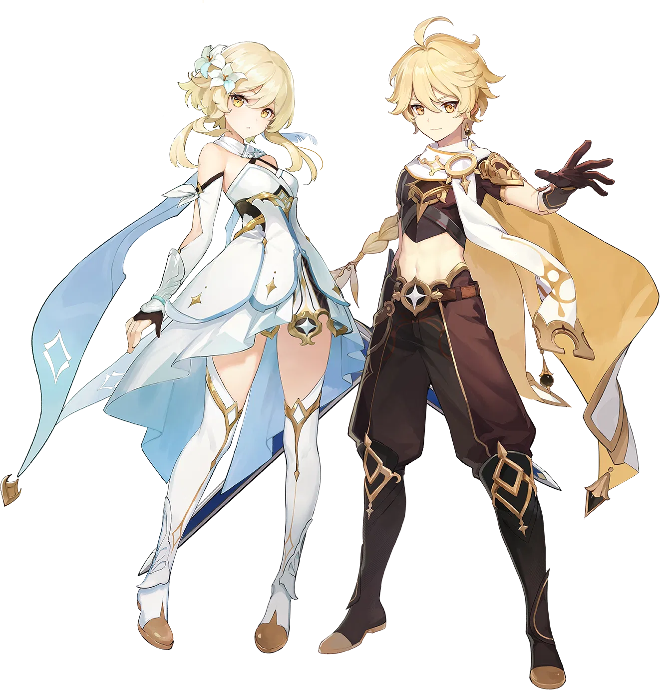
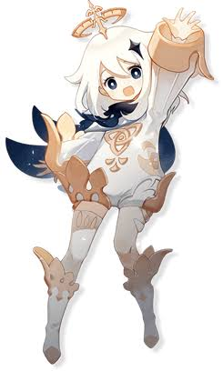
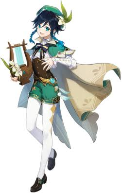
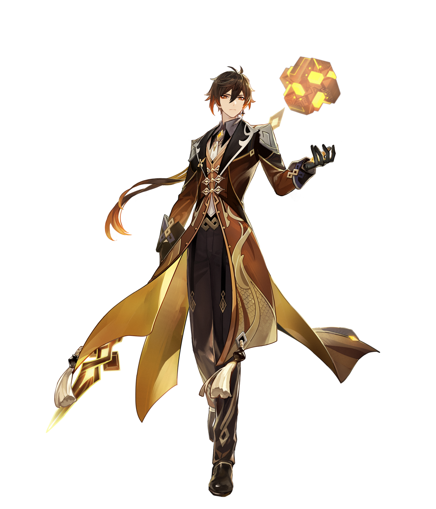
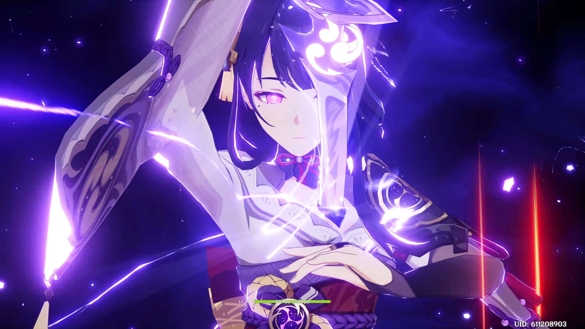

Escolha do protagonista
Escolha entre Aether e Lumine para iniciar sua jornada em Teyvat e descobrir os acontecimentos que envolvem os dois irmãos.
Explore a história de uma das aventuras mais marcantes dos videogames. Conheça Teyvat, seus heróis e os segredos que atravessam gerações.
Conhecer o jogo →
Conheça os principais dados de Genshin Impact.
Genshin Impact é uma aventura que acompanha o Viajante em uma jornada pelo continente de Teyvat. Ao longo de sua trajetória, o jogador explora diferentes nações, enfrenta desafios elementais e descobre os mistérios que envolvem os deuses e o destino do mundo.
Explore os principais sistemas que tornam Genshin Impact uma aventura dinâmica.
Escolha entre Aether e Lumine para iniciar sua jornada em Teyvat e descobrir os acontecimentos que envolvem os dois irmãos.

Explore regiões, encontre baús, resolva enigmas, complete missões e descubra segredos espalhados pelo mundo.

Enfrente inimigos e chefes utilizando ataques, habilidades e estratégias diferentes para cada situação.

Utilize habilidades especiais e supremos para aproveitar os poderes de cada personagem durante os combates.

Combine elementos como Pyro, Hydro, Electro e Cryo para produzir reações que influenciam o combate.

Utilize o sistema de Desejos para tentar obter novos personagens e armas por meio das invocações.
Genshin Impact permite explorar Teyvat em diferentes plataformas.

Aproveite a aventura em computadores e dispositivos móveis, explorando o mundo de Teyvat em diferentes lugares.

Explore as regiões de Teyvat utilizando os controles e a experiência visual oferecida pelos consoles compatíveis.
Uma jornada marcada por mistérios, conflitos, deuses e descobertas.

A história começa quando dois irmãos viajantes chegam ao mundo de Teyvat e são separados por uma misteriosa divindade. Após perder seus poderes, o protagonista inicia uma jornada para encontrar seu irmão ou irmã desaparecida.
Durante essa aventura, o Viajante conhece Paimon, sua companheira de jornada, e percorre diferentes nações, cada uma marcada por sua própria cultura, história e elemento. Ao longo do caminho, surgem conflitos envolvendo os Arcontes, a Ordem do Abismo e os Fatui.
Entretanto, a busca pelo familiar desaparecido revela que Teyvat guarda segredos muito maiores sobre sua origem, seus deuses e o próprio destino de seus habitantes.
Conheça algumas das figuras que fazem parte da história e das aventuras de Genshin Impact.

Protagonista da aventura, percorre Teyvat em busca de seu irmão ou irmã desaparecida, descobrindo os mistérios desse mundo.

Companheira de viagem do protagonista, ajuda nas aventuras e apresenta informações importantes sobre Teyvat.

Bardo de Mondstadt e manifestação do Arconte Anemo, conhecido por sua ligação com a liberdade e os ventos.

Consultor da Casa Funerária Wangsheng e identidade humana do Arconte Geo, associado à história de Liyue.

Figura central de Inazuma e ligada ao elemento Electro, representa a busca pela eternidade.

Espadachim errante de Inazuma, conhecido por sua personalidade tranquila e sua conexão com o elemento Anemo.
Conheça algumas das nações que compõem o mundo de Genshin Impact e suas características.

A cidade da liberdade, marcada por paisagens naturais, moinhos de vento e a influência do Arconte Anemo.

Uma nação de tradições e comércio, conhecida por suas montanhas e pela forte influência de sua história.

Um arquipélago de ilhas marcado pela busca da eternidade e por uma cultura inspirada no Japão.

Uma região de conhecimento, com grandes florestas, desertos e importantes instituições de estudo.

Uma nação conhecida por sua tecnologia, arquitetura, artes e forte relação com a justiça.

Uma região marcada por diferentes tribos, tradições guerreiras e uma forte conexão com os dragões.
Conheça alguns detalhes interessantes sobre o desenvolvimento e o universo do jogo.
Teyvat recebe atualizações que adicionam novas regiões, personagens, missões e histórias ao longo do tempo.
O sistema elemental é baseado em sete elementos: Anemo, Geo, Electro, Dendro, Hydro, Pyro e Cryo.
A música utiliza diferentes estilos e instrumentos para representar as culturas e atmosferas das regiões de Teyvat.
O jogador pode escalar montanhas, planar de grandes alturas e nadar para descobrir diferentes lugares.
A interação entre elementos cria reações como Vaporização, Sobrecarga, Congelamento e Florescimento, entre outras.
Consulte os canais oficiais e materiais relacionados ao universo de Genshin Impact.
Imagens utilizadas para fins educativos e de apresentação do universo do jogo.